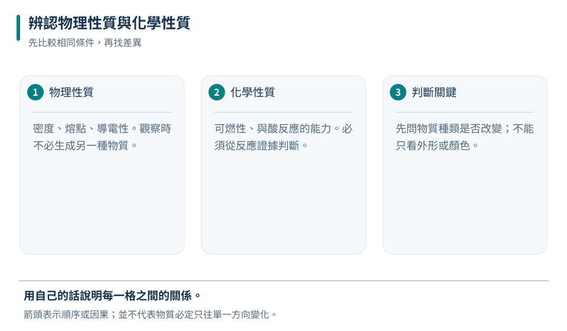
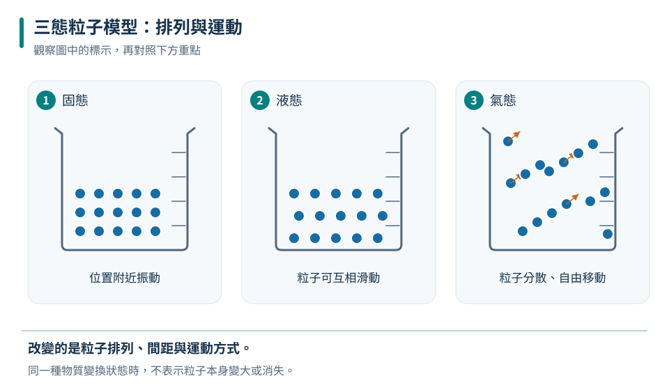
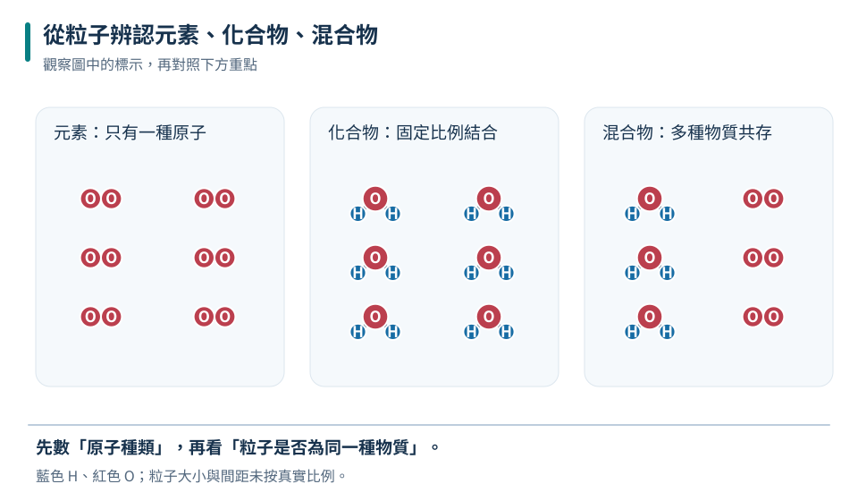
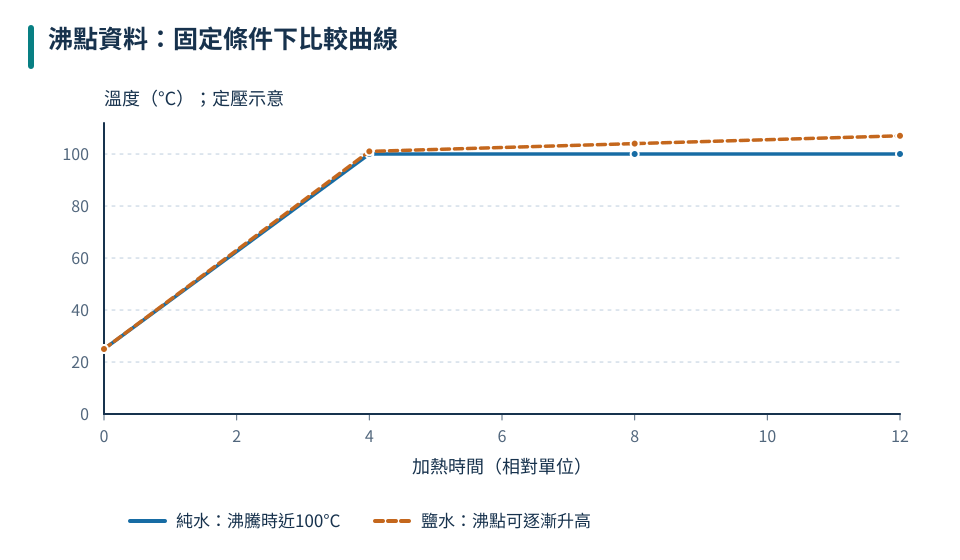
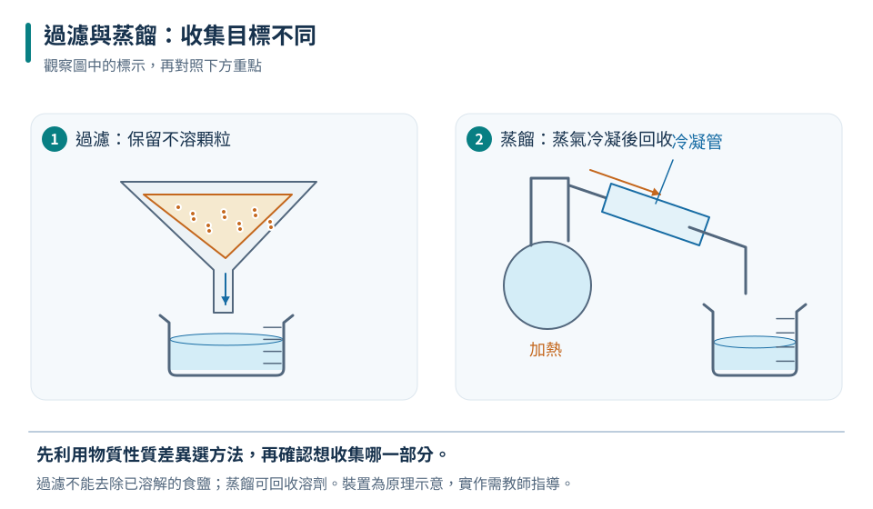
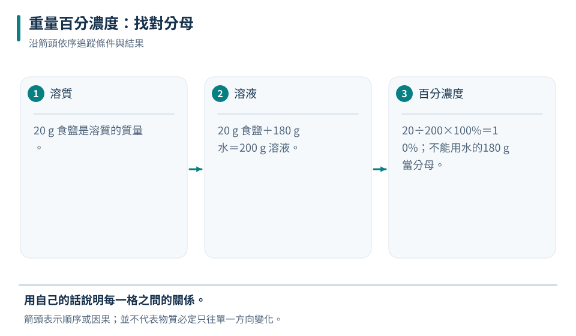
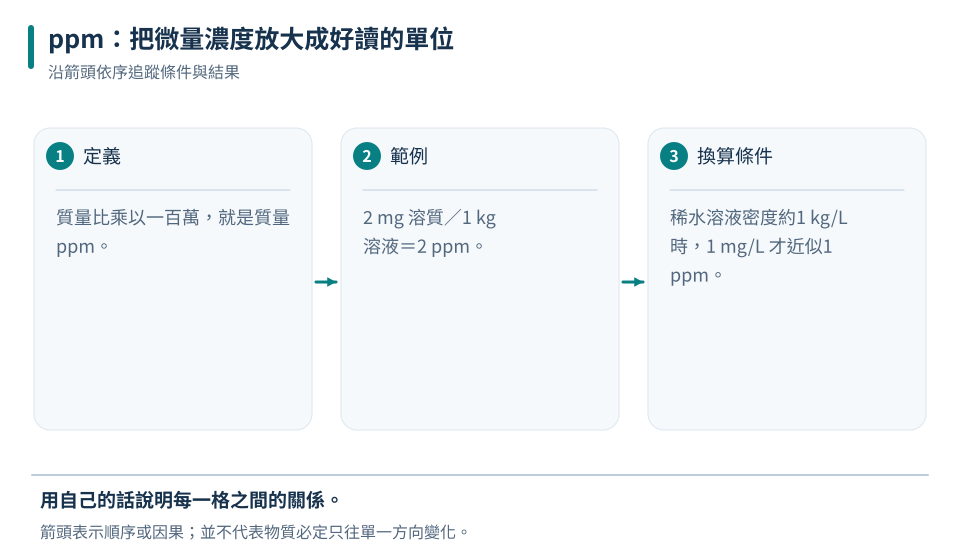

八上理化共同核心
第二章 物質與溶液
從「物質有哪些性質」開始，學會分類純物質與混合物，再依性質差異選擇分離方法，最後掌握百分濃度與 ppm。重點不是背名稱，而是能根據證據做判斷。
7個學習小節
30題章末練習
4組互動學習
75–100分鐘建議時間
辨認性質→分類物質→選分離法→計算濃度
01
PROPERTIES
物理性質與化學性質
圖解筆記開啟 SVG 原圖 ↗

先追蹤圖中的物體與箭頭，再用本節概念說明它們的關係。
判斷關鍵只有一個：觀察這項性質時，是否必須讓物質變成另一種物質？
物理性質
不改變物質種類即可觀察或測量，例如顏色、氣味、狀態、密度、熔點、沸點與溶解情形。
物質身分沒有改變化學性質
必須經過化學反應才會表現，例如可燃性、與氧或酸反應的能力，以及是否容易腐蝕。
會生成性質不同的新物質要不要反應才能看出來？不用 → 物理性質需要 → 化學性質
「看得見」不是判準
鐵生鏽看得見，但沸點也能觀察。真正的判準是有沒有生成新物質。
02
STATES & CHANGES
三態與物質變化
圖解筆記開啟 SVG 原圖 ↗

先追蹤圖中的物體與箭頭，再用本節概念說明它們的關係。
| 狀態 | 形狀 | 體積 | 粒子觀點 |
|---|---|---|---|
| 固態 | 固定 | 固定 | 排列緊密，只在原位置附近振動 |
| 液態 | 隨容器改變 | 大致固定 | 距離近，但可彼此移動 |
| 氣態 | 隨容器改變 | 隨容器改變 | 距離遠，可充滿容器 |
物理變化與化學變化
可操作粒子模型
切換三態，看粒子排列怎麼改變
固態粒子排列緊密且位置固定，只能在原位附近振動。
現象只是線索，不是單獨證明
冒泡、變色、發光、放熱或產生沉澱，常提示可能有化學反應，但仍要判斷是否形成新物質。例如水沸騰也會冒泡，卻只是物理變化。
03
PURE SUBSTANCES
純物質、元素與化合物
圖解筆記開啟 SVG 原圖 ↗

先追蹤圖中的物體與箭頭，再用本節概念說明它們的關係。
純物質具有固定組成與特定性質，可再分成元素與化合物。
物質
純物質
固定組成、特定熔點與沸點
元素不能再用化學方法分成更簡單物質化合物不同元素以固定比例組成
混合物
含兩種以上純物質，比例可改變
元素
只有一種原子組成。
化合物
不同原子按固定比例結合。
混合物
同時含有兩種以上粒子。
元素
氧、鐵、金、銅
化合物
水、二氧化碳、食鹽
不是看名稱
「氧氣」仍是元素；「純水」是化合物。
化合物不是混合物
兩者都可能含多種元素，但化合物比例固定、性質全新；混合物比例不固定，各成分保留原本性質。
04
MIXTURES
混合物與判別證據
圖解筆記開啟 SVG 原圖 ↗

先追蹤圖中的物體與箭頭，再用本節概念說明它們的關係。
混合物不一定看得出成分。空氣、海水、合金與透明糖水外觀均勻，仍是混合物。
組成比例可以改變
性質隨成分比例而變
如何從資料判斷
- 看組成不同批次比例是否都一樣？
- 看熔沸點純物質在固定壓力下具有特定熔點、沸點；混合物常呈現範圍。
- 能否分離若可用物理方法分成性質不同的成分，通常是混合物。
查看圖表資料表
| 比較項目 | 純物質 | 混合物 |
|---|---|---|
| 沸騰時溫度 | 在特定溫度維持一段時間 | 常在一段範圍內變化 |
| 圖線特徵 | 可見水平平台 | 常持續緩升 |
資料判讀
甲液體在 78°C 穩定沸騰；乙液體由 72°C 升到 86°C 仍持續沸騰。
甲
較可能是純物質。
乙較可能含多種成分，是混合物。
05
SEPARATION
混合物的分離
圖解筆記開啟 SVG 原圖 ↗

先追蹤圖中的物體與箭頭，再用本節概念說明它們的關係。
分離不是背器材，而是先找出成分之間哪一項性質不同。
過濾
顆粒大小、是否溶解分離不溶性固體與液體，例如砂與水。
蒸發結晶
溶劑易揮發保留溶解的固體，例如海水曬鹽。
蒸餾
沸點不同汽化後再冷凝，收集較純的液體。
濾紙層析
移動程度不同把混合色素分開，例如分析墨水。
流程題
食鹽水中混有細砂，如何分別取得砂與鹽？
先過濾→濾紙留下砂→蒸發濾液→取得鹽晶體
已溶解的物質會通過普通濾紙
食鹽水看起來沒有鹽粒，不代表鹽消失。鹽仍存在，只是粒子小到能隨水通過濾紙。
06
SOLUTION
溶液與重量百分濃度
圖解筆記開啟 SVG 原圖 ↗

先追蹤圖中的物體與箭頭，再用本節概念說明它們的關係。
溶質
被溶解的物質，例如鹽水中的食鹽。
溶劑
負責溶解其他物質，例如鹽水中的水。
溶液
溶液質量＝溶質＋溶劑
重量百分濃度溶質質量 ÷ 溶液質量 × 100%分母不是溶劑，而是整杯溶液
互動調配實驗
拖動數值，觀察濃度比例
重量百分濃度10.0%溶液總質量 200 g
20 克溶質加入 180 克溶劑，總質量 200 克，重量百分濃度 10.0%。
加水
溶質不變、溶液變多，濃度下降。
蒸發水
溶質不變、溶液變少，濃度上升。
加入溶質
溶質比例增加，濃度上升。
完整示範
12 g 食鹽加入 108 g 水並完全溶解，濃度是多少？
溶液
12＋108＝120 g
濃度12÷120×100%＝10%
看清楚題目問哪一個質量
「200 g、5% 食鹽水」表示整杯溶液 200 g，其中食鹽 10 g、水 190 g。
07
TRACE CONCENTRATION
ppm 與綜合應用
圖解筆記開啟 SVG 原圖 ↗

先追蹤圖中的物體與箭頭，再用本節概念說明它們的關係。
當濃度非常低時，用百分比會出現很多零，改用 ppm（百萬分之一）更容易閱讀。
基本意義1 ppm＝1／1,000,000
稀水溶液近似1 mg/kg ≈ 1 ppm
生活數據
1.0 kg 水樣中含 3 mg 某物質
換算
3 mg ÷ 1 kg
答案約 3 ppm
選方法的思考順序
先確認目標→找性質差異→選分離方法→檢查產物位置
| 想取得什麼 | 混合物 | 合適方法 |
|---|---|---|
| 砂 | 砂＋水 | 過濾，收集濾紙上的固體 |
| 鹽 | 食鹽水 | 蒸發結晶，收集留下的晶體 |
| 水 | 食鹽水 | 蒸餾，收集冷凝液 |
| 色素成分 | 墨水 | 濾紙層析 |
08
INTERACTIVE LAB
互動科學實驗室
每題選擇後立即知道結果。答錯時先看提示，再重新挑戰。
挑戰一
性質分類快手
判斷畫面中的性質屬於哪一類。
沸點
選一個答案開始挑戰。
挑戰二
分離方法配對
依照要取得的物質，選擇最合適的方法。
從泥水中取得清澈的水
選一個答案開始挑戰。
09
REVIEW
一頁重點總整理
性質與變化
有沒有生成新物質，是區分物理與化學變化的核心。
物質分類
純物質組成固定；混合物比例可改變。純物質分元素與化合物。
分離方法
依溶解性、顆粒大小、沸點或移動程度的差異選方法。
濃度
重量百分濃度＝溶質÷溶液×100%
極稀溶液常用 ppm。
進入測驗前，我能做到
CHAPTER TEST
30 題章末測驗
先獨立作答，再查看解析。答題紀錄只保存在這台裝置的瀏覽器中。
目前成績尚未作答0／30 題